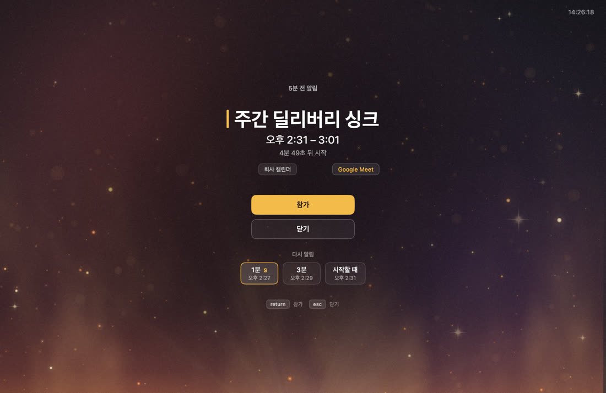
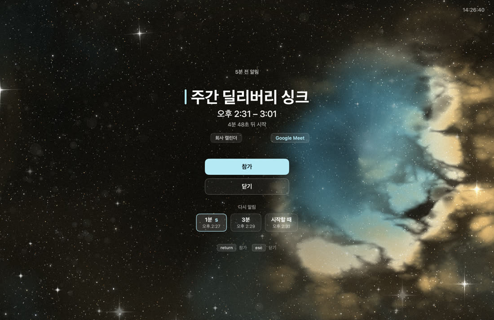
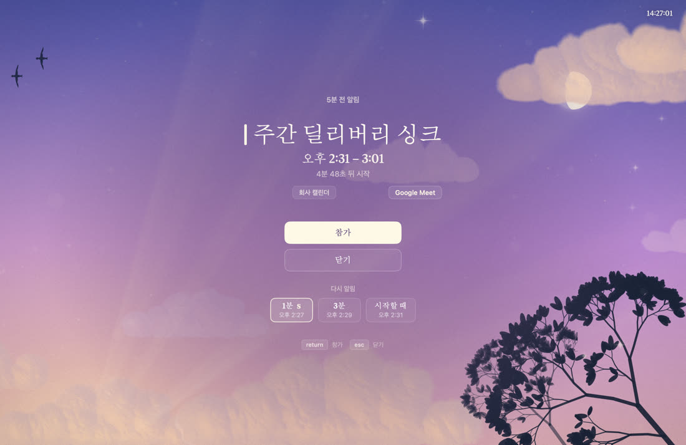

아래로 내리면 회의가 5분 남습니다
탈출구는 항상 있습니다.
어떤 상태에서도 Esc 한 번이면 사라집니다. 이건 타협 대상이 아닙니다.
소리는 발화할 때 1회. 화면을 안 보고 있을 때를 위한 나머지 절반입니다. 반복하지 않고, 끌 수 있습니다.
지금 회의가 5분 남았습니다. 계속 내리세요.



덧붙임
이 페이지가 덮는 것은 페이지뿐입니다
브라우저 탭 안에서 뜨는 것과 운영체제를 덮는 것은 다릅니다. 그래서 옆에 실제 앱 화면을 둡니다. 저 배경은 그림이 아니라 매 프레임 시뮬레이션되는 층이고, 이 페이지의 배경도 같은 규칙으로 돕니다.
발화하면 연결된 모든 디스플레이 각각에 전체 화면 창이 뜹니다. 다른 앱이 네이티브 전체 화면이어도 그 위에 뜨고, 모든 Space에 걸쳐 뜨며 Space를 옮겨도 따라옵니다.
SPEC F4.1 · F4.2 · F4.3 — 창 레벨은 .screenSaver(1000)로 충분했다 (Phase 0 [0-5] 실측)
덮는다의 대가
그러면서 빼앗지는 않습니다
전면 앱을 빼앗지 않습니다. 타이핑하던 앱은 그대로 두고 키 입력만 받습니다.
알림 창은 비활성화 패널(NSPanel(.nonactivatingPanel))로 뜹니다. 창 뜬 직후 frontmost 는 다른 앱 그대로인데 window.isKeyWindow 는 true 였습니다. 전면을 뺏지 않고 키를 받았다는 뜻입니다.
손쉬운 사용(접근성) 권한도 요구하지 않습니다. 전역 키 모니터와 CGEventTap 은 쓰지 않습니다 — 권한을 요구하고, 이벤트를 소비할 수 없어 Esc 가 전면 앱에도 전달됩니다.
맥이 자는 것도 막지 않습니다. 정확도를 위해 App Nap 만 억제하고 유휴 절전은 건드리지 않습니다. .userInitiated 가 .idleSystemSleepDisabled 를 품고 있어 한 번 틀렸고, pmset -g log 로 잡아내 바로잡았습니다.
- window.isKeyWindow == true · frontmost == 다른 앱
- AXIsProcessTrusted() == false
- pmset -g assertions | grep -i untillity → (빈 결과)
제외 규칙
무엇을 안 띄울지가 이 앱의 절반입니다
들어온 것 12 · 제외 0 · 중복 0 · 남은 것 12
12건이 왼쪽에서 들어와 8개의 관문을 지납니다. 걸린 것은 조건 번호가 찍히고 가라앉습니다.
취소된 일정, 종일 일정, 내가 거절한 일정, 4시간 넘는 장시간 일정, 이미 끝난 일정은 기본값으로 안 띄웁니다. “컨퍼런스 월~수” 같은 일정이 앱을 켤 때마다 화면을 덮으면 안 되니까요. 제외 조건표는 8행이고, 위에서부터 평가해 하나라도 걸리면 제외합니다 — 코드의 조건 순서가 표의 행 순서와 일치합니다.
통과한 뒤에도 한 번 더 거릅니다. (eventIdentifier, startsAt) 은 유일하지 않습니다 — 273건 중 64쌍이 겹쳤습니다. 같은 회의가 두 캘린더에 있었습니다.
캘린더는 계정별로 묶어 보여주고 끄고 싶은 것만 끕니다. 저장하는 것은 켠 것이 아니라 끈 것입니다. 회사가 새 캘린더를 붙였을 때 기본이 “꺼짐”이 되어 회의를 조용히 놓치는 일이 없도록.
판정은 순수 함수 하나가 합니다. 그리고 왜 안 띄웠는지가 [판정] 로그에 조건 번호와 함께 남습니다 — “왜 안 떴지”를 추측하지 않아도 됩니다.
보고 싶을 때는 대기 화면
⌃⌥⌘U — 알림이 없을 때도 같은 배경에 큰 시계와 다음 회의
자리를 비울 때 화면을 덮고, 돌아왔을 때 다음 회의가 바로 보입니다. 위아래 방향키나 스크롤로 뒤의 회의를 넘겨 보세요. 오른쪽의 점이 지금 몇 번째 칸인지 말합니다 — 최대 셋까지만. 상한이 없으면 40건에 442pt 가 되어 셀 수도 없어집니다.
떠 있는 동안 단축키를 다시 누르면 테마가 바뀌고 그대로 저장됩니다. 지금 T 를 누르면 이 페이지의 배경이 바뀝니다.
배경은 두 층이고 — 구워 둔 그림 위에 매 프레임 시뮬레이션되는 살아 있는 층이 얹힙니다. 둘은 같은 카메라를 봅니다. 마우스를 움직여 보세요.
이 화면은 정보 화면이 아니라 보는 화면이라, 조작을 말하는 것들은 평소에 숨어 있다가 마우스를 움직이면 떠오릅니다. 잠금은 아닙니다 — 진짜 잠금은 macOS 의 ⌃⌘Q 입니다.
세 장 모두 실제 앱 화면입니다. 카드를 누르면 이 페이지의 배경도 그 테마로 바뀝니다.
근거
여기부터는 숫자입니다
반올림한 마케팅 숫자가 아니라 측정값 그대로 적습니다.
무인 4시간 동안 17회 측정한 발화 정확도의 최대 오차. SPEC 한도는 +2초이고 음수 오차는 0회였습니다.
SPEC F10 · [정확도] 로그 17행
lsof -i -a -p <pid> 도, nettop -P -x -l 1 -p <pid> 도 빈 결과. 캘린더를 읽기만 하고 아무 데도 보내지 않습니다. 선언이 아니라 측정입니다.
SPEC F12.1~F12.3 · F12 [V] 실측
UntillityCore 라인 커버리지. 오케스트레이터인 AlertEngine 이 99.21% 입니다. 진짜 결함은 순수 함수가 아니라 거기서 납니다 — 타이머 재무장, 무효화 순서, 큐, 절전 복귀 재계산.
swift test --enable-code-coverage · 목표 90%
내 주소가 참석자 목록에 명시돼 있는데도 isCurrentUser == false 였던 이벤트. 그것만 믿으면 거절한 회의에 알림이 뜹니다.
SPEC §6 · 참석자가 있는 이벤트 222건 중
(eventIdentifier, startsAt) 충돌. 273건 중에서. 같은 회의가 두 캘린더에 있었습니다.
SPEC F2.9 · EventKey 중복 제거의 이유
store.sources 44개 중 39개가 이벤트 캘린더 0개인 회의실 리소스 캘린더였습니다. 걸러내야 실제 계정 수 3개가 나옵니다.
SPEC F1.7 · 계정 판정
실사용 로그 대조 1일차의 누락 · 오탐 · 중복. 절전 복귀 4회를 포함한 수치입니다.
tools/verify-log.py
상주 메모리. 평소 CPU 는 0.0% 입니다.
F12 [V] 실측 동일 세션
이 저장소는 코드보다 판단의 기록이 많습니다.
SPEC.md(불변 사양) · PROGRESS.md(실측) · docs/signing.md(코드서명 근거)
설치
설치에 5분, 조심할 것은 하나
한 번만 하면 됩니다. 요구 사항은 macOS 15.2 이상입니다.
왜 경고가 뜨나요. Apple 공증(notarization)을 받지 않아서입니다. 개발자 프로그램(연 $99)에 가입하지 않고 만들었고, 아는 사람에게만 나눠주는 앱이라 가입하지 않았습니다. 대신 서명은 확실히 합니다 — 고정된 self-signed 인증서로 서명해서, 업데이트해도 캘린더 권한을 다시 주지 않아도 됩니다.
조심할 것은 하나입니다. 경고 창의 파란 기본 버튼이 「휴지통으로 이동」입니다. 안내 없이 Return 을 누르면 앱이 삭제됩니다. 「완료」를 누르세요. 「그래도 열기」 뒤의 2차 확인 창에서도 맨 위가 「휴지통으로 이동」입니다.
- 1
요구 사항을 확인합니다 — macOS 15.2 이상. 설치에 5분 걸리고, 한 번만 하면 됩니다.
- 2
Releases 에서
Untillity-x.y.z.dmg를 받습니다. (0.3.0 은 아직 공개 전입니다.) - 3
dmg 를 열고 앱을 응용 프로그램 폴더로 끌어다 놓습니다 — dmg 안에서 바로 열지 마세요. App Translocation 으로 임시 경로에 복사돼 실행되고, 로그인 항목 등록이 엉뚱한 경로로 갑니다.
- 4
응용 프로그램 폴더에서 두 번 눌러 엽니다. 경고가 뜨면 「완료」.
파란 기본 버튼인 「휴지통으로 이동」을 누르면 앱이 삭제됩니다.
- 5
시스템 설정 → 개인정보 보호 및 보안 → 맨 아래 「보안」에서 「그래도 열기」. 이 버튼은 앱을 연 뒤 약 1시간만 보입니다.
- 6
확인 창이 한 번 더 뜹니다. 여기서도 「휴지통으로 이동」이 맨 위이므로, 가운데 「그래도 열기」를 누릅니다. 이어서 Touch ID 또는 암호를 승인합니다.
- 7
Dock 에 아무것도 안 뜨는 것이 정상입니다 — 메뉴 막대 전용 앱입니다. 화면 오른쪽 위 메뉴 막대에서 종 아이콘을 확인하세요.
- 8
캘린더 접근을 물으면 「전체 접근 허용」. 읽기만 하고 어디에도 보내지 않습니다.
- 9
설정 창에서 「로그인할 때 언틸리티 시작」을 켜두면 끝입니다.

설정 창 그림은 「알림」 탭입니다. 「로그인할 때 언틸리티 시작」은 「일반」 탭에 있습니다.
자주 묻는 것
먼저 답해 둡니다
왜 설치할 때 경고가 뜨나요? 위험한 앱인가요?
Return 을 누르면 앱이 삭제됩니다. 설치 안내를 보면서 하세요. 한 번만 통과하면 이후 업데이트에서는 다시 묻지 않습니다.제 캘린더 내용이 어디로 가나요?
lsof -i -p <pid> 와 nettop -p <pid> 를 돌려 연결이 0인 것을 직접 확인할 수 있습니다(개발 중 실측에서도 두 명령 모두 행 0개였습니다). 로그는 ~/Library/Logs/Untillity/untillity.log, 사용자 홈 안에만 남습니다.어떤 권한을 요구하나요?
RegisterEventHotKey 로 만들어서 둘 다 접근성 권한 없이 동작합니다.어떤 캘린더를 지원하나요? 구글 로그인이 필요한가요?
알림이 하나도 안 떠요.
[디버그] 로그 폴더 열기. [권한] 읽기 가능 → 이벤트 캘린더 N개 줄의 N이 0이면 캘린더를 못 읽고 있는 것이고, 회의가 있는데 안 떴다면 [판정] 줄에 제외 사유가 조건 번호와 함께 적혀 있습니다(예: F2-7 장시간 일정). 참고로 0.2.7 이전 버전에는 첫 설치 직후 그 세션에서 캘린더가 비어 보이는 결함이 있었고, 지금은 권한을 받은 즉시 캘린더를 다시 읽도록 고쳐져 있습니다.메뉴 막대에 아이콘이 안 보여요.
‹ 를 눌러 숨은 영역을 펼쳐 보세요. 아이콘이 거슬리면 설정에서 끌 수도 있습니다 — 꺼도 알림은 그대로 뜹니다.알림 때문에 맥이 계속 깨어 있지는 않나요? 배터리는요?
pmset -g assertions | grep -i untillity 이고, 아무것도 안 나오는 것이 정상입니다. 평소 CPU는 거의 0이고 메모리는 47MB 안팎입니다(같은 시점 실측 46.8MB).대기 화면은 화면 잠금인가요?
Esc 를 누르거나 클릭하면 닫힙니다. 자리를 비울 때 화면을 덮고 돌아왔을 때 다음 회의를 바로 보려는 화면이지, 잠그는 화면이 아닙니다. 진짜 잠금은 macOS 의 ⌃⌘Q 입니다.지우려면 어떻게 하나요?
Untillity.app 을 휴지통으로 옮기면 됩니다. 캘린더 권한까지 지우려면 tccutil reset Calendar com.bonjugi.untillity (sudo 필요 없습니다), 로그는 ~/Library/Logs/Untillity/ 를 지우면 됩니다. 앱이 남긴 것은 그 둘과 설정값뿐입니다.